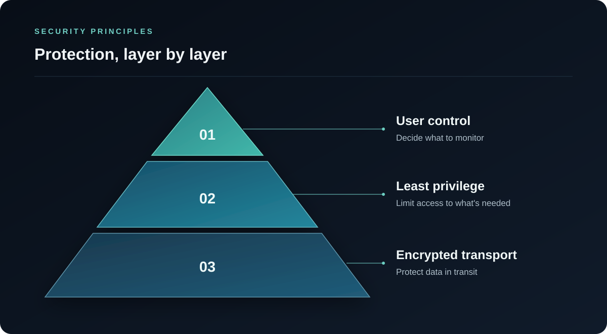

01 · 安全原则
分层安全设计
OpsHome NOC 面向家庭实验室、自托管服务和小型基础设施环境设计。平台结合加密传输、最小权限、私有网络边界保护、用户控制的监控范围以及可验证的软件发布。
OpsHome NOC 是独立开发的专有软件，通过公开的安全边界和可验证的发布证据建立产品信任。

02 · 连接边界
私有基础设施保留在用户网络边界内
OpsHome 客户端和 Docker Probe 均通过加密 HTTPS 连接访问服务。公网服务采用严格的传输控制和受保护的源站边界，试图绕过受保护入口直接访问源站的请求会被阻止。
Docker Probe 运行在用户授权的网络中，并主动建立出站连接。正常使用无需开放入站防火墙端口、配置路由器端口转发或公开内部管理界面。
受保护的访问界面
- 原生客户端
- 通过加密连接访问监控服务，受支持的身份数据由 Apple Keychain Services 保护。
- OpsHome Console
- 使用 Apple 身份认证和限时会话提供只读浏览器访问，不具备基础设施控制能力。
- Docker Probe
- 由用户控制的私有基础设施出站监控，无需公开入站管理服务。
03 · Docker Probe
权限跟随用户启用的监控功能
每项监控能力只使用完成该功能所需的权限。相关权限会在部署前清晰展示，并由用户主动启用。
- Probe 只访问用户授权的监控目标。
- 宿主机数据路径采用只读挂载。
- 不发布入站服务端口。
- 不提供远程 Shell、Docker Exec 或容器控制功能。
- 发布的镜像中不包含用户凭据。
应用密钥、业务文件内容及与监控无关的数据不属于 OpsHome 遥测范围，不会作为监控记录保存或上传。
04 · 凭据与通信保护
敏感信息与普通监控数据分开处理
- 客户端和 Probe 使用加密 HTTPS 连接。
- Probe 通信采用带防重放保护的认证请求。
- 受支持的服务端敏感凭据在存储前加密。
- 受支持的 iOS 身份数据由 Apple Keychain Services 保护。
- 应用日志不会记录完整密钥。
在所连接的平台支持时，用户应为基础设施集成创建专用的最小权限账户。
05 · 数据处理
监控记录用于提供历史、事件分析和通知
OpsHome NOC 根据用户配置的监控任务生成状态、事件和趋势记录，用于提供历史查看、事件分析和通知服务。
| 数据类别 | 公开处理标准 |
|---|---|
| 账户与监控配置 | 账户有效期间保存，并实施访问控制。 |
| 监控事件历史 | 仅在当前方案提供的历史窗口内保存，到期后自动清理。 |
| 基础设施状态与指标 | 用于提供当前状态、趋势、故障和通知。 |
| 敏感业务内容 | 不作为监控遥测数据保存或上传。 |
用户确认删除账户后，系统会立即启动自动化删除流程，清理账户及相关服务数据。退出登录只结束当前会话，不会删除账户。
06 · 版本完整性与验证
公开证据与确定的镜像绑定
- 目标
- opshome-probe:latest
- 扫描状态
- 通过
- 检测到的漏洞
- 0
- 扫描日期
- 2026-09-30
镜像摘要sha256:689dc3b46954b2fcf25362f2847e9fd11d9cd6bc55cc92c102ca775b6d1ba8c3
对应的 OpsHome Probe Go 二进制自动化扫描结果为0项已知漏洞。公开的镜像摘要将该结果绑定到经过验证的确定镜像。
用户可以独立核对镜像摘要、公开端口、只读挂载、部署权限和出站连接。
独立安全验证
07 · 共同责任与报告
服务与本地环境共同构成安全边界
OpsHome 负责维护产品和云端服务的安全控制。用户始终保留对本地主机、网络策略、集成凭据、监控目标和平台更新的管理权。
报告安全问题
请将受影响版本、相关背景和安全的复现说明发送至 support@opshome.run。